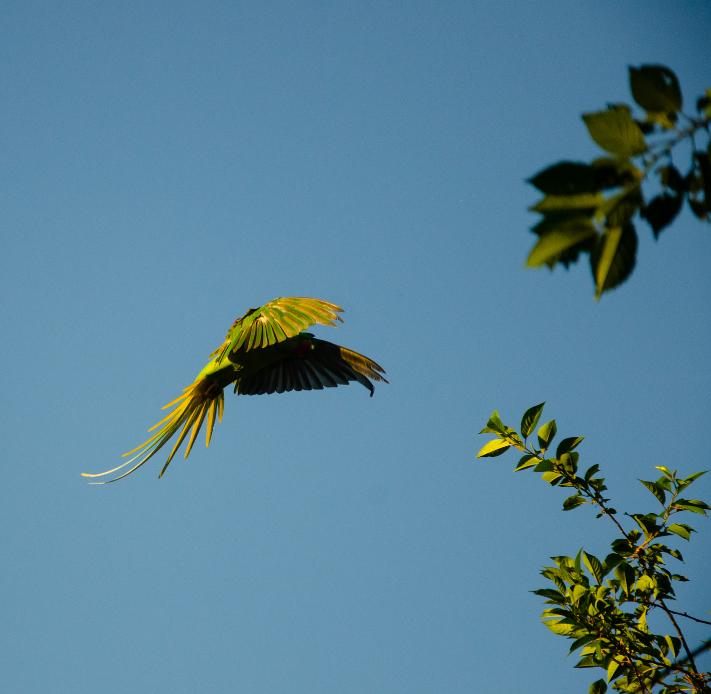
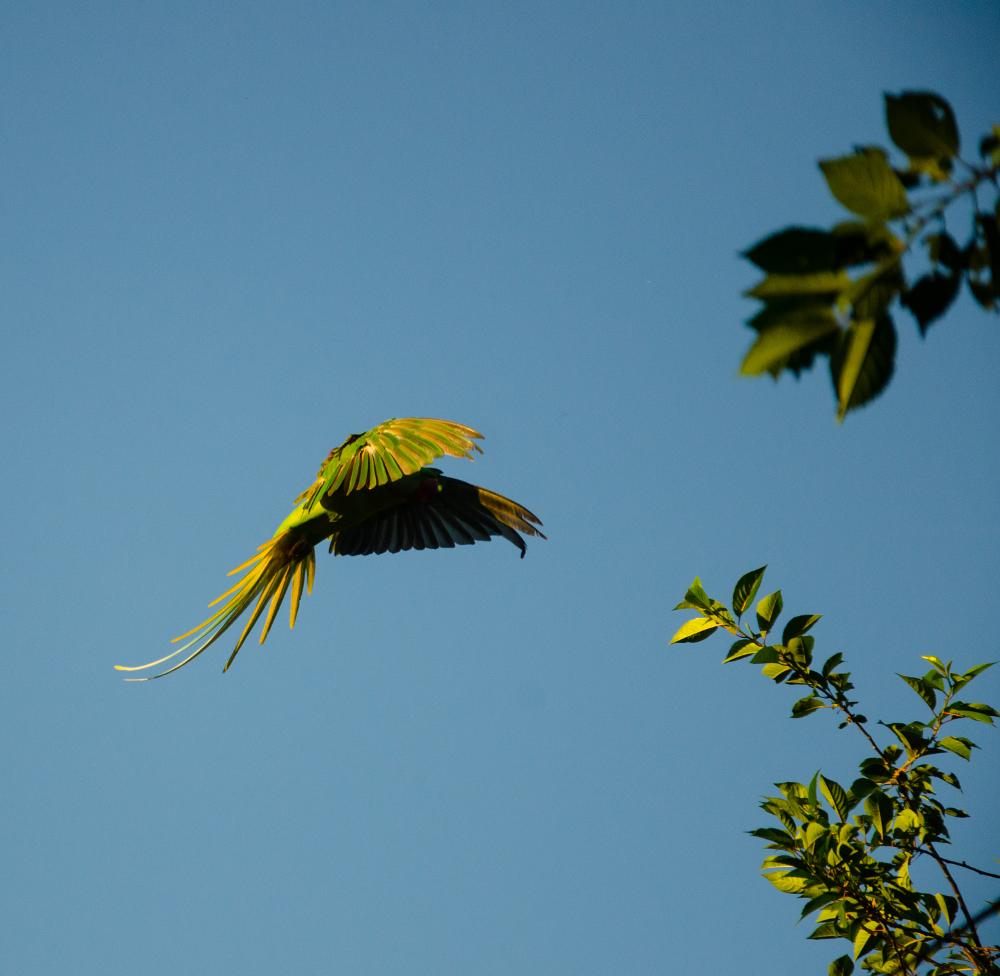
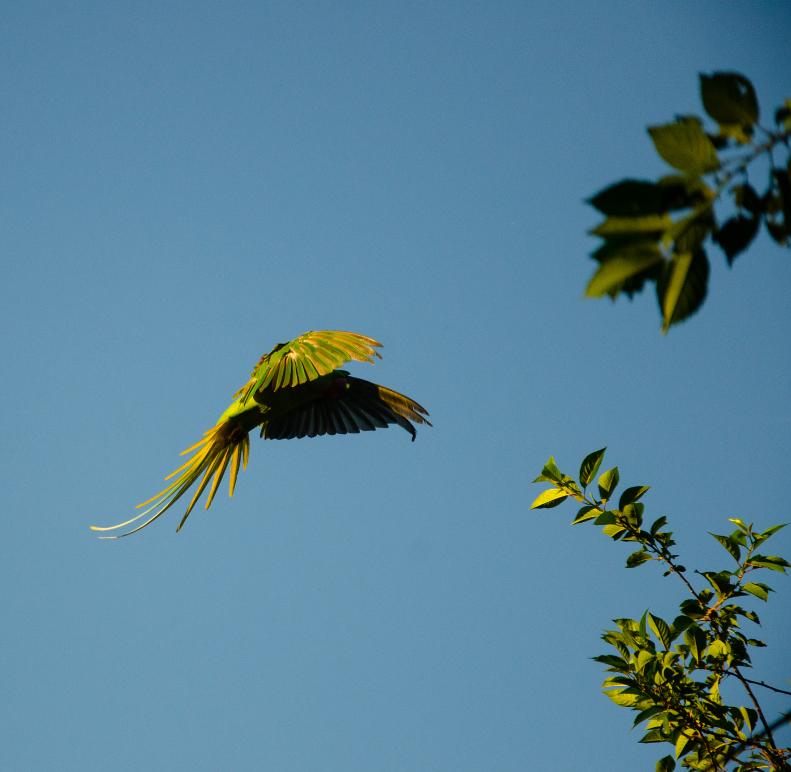

Photography - Warm skies Warm summer skies is the theme of this series. Captured in San Fransisco, Amsterdam and on Ameland, the series has a variety of origins.

 

Photography - Warm skies Warm summer skies is the theme of this series. Captured in San Fransisco, Amsterdam and on Ameland, the series has a variety of origins.

Photography - Black & white In this black and white series, I explore contrast and variation in calm and busy compositions.


Photography - Nighttime This series covers some challenging subjects, the milkyway in light-poluted conditions and fast lightning strikes.

About Hi, my name is Jochem Baas, I'm a photographer, videographer, programmer, and ice-skating teacher. Check out my programming site for my web design and other projects. Due to my organized and structured working habits, my great performance in team environments and my communicative skills, I'm pleasant to work with. It is pleasant to work with me, because I work in a structured and organized way, I'm very communicative and work well in a team environment. Additionally, my experience in teaching allows me to explain everything very clearly, to every level of client. Don't hestitate to reach out.

Contact
Instagram: @fotosvanjochem
Linkedin: Jochem Baas
Email: info@yoghum.nl